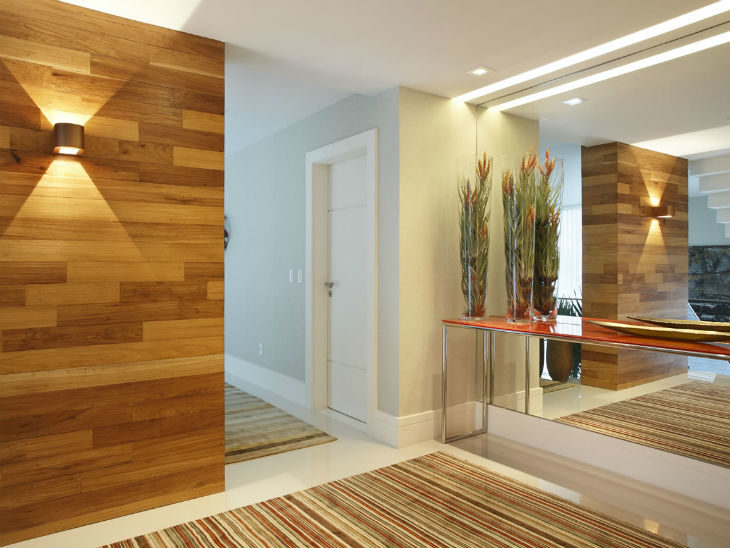
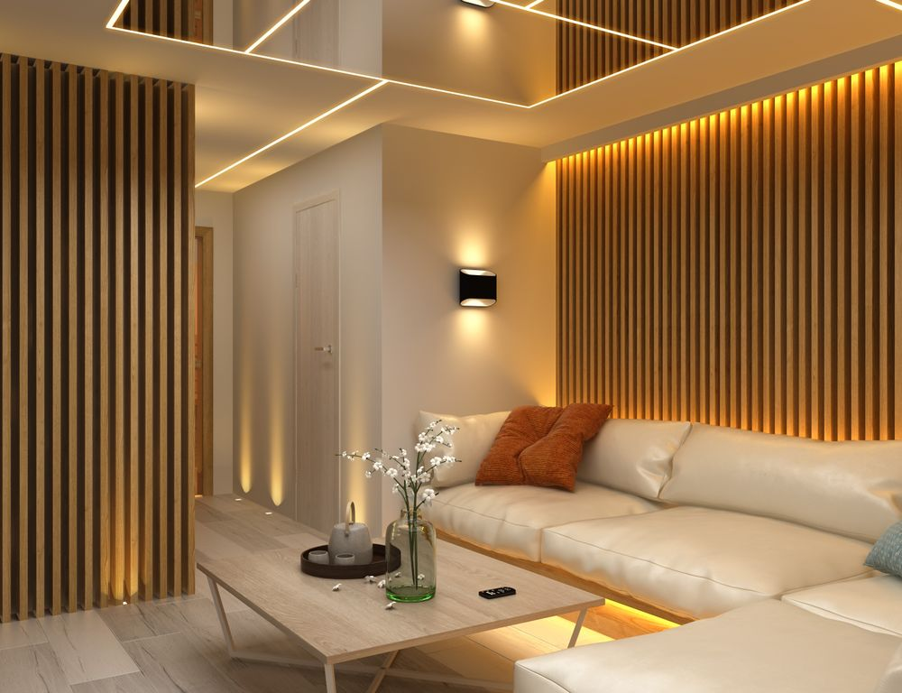
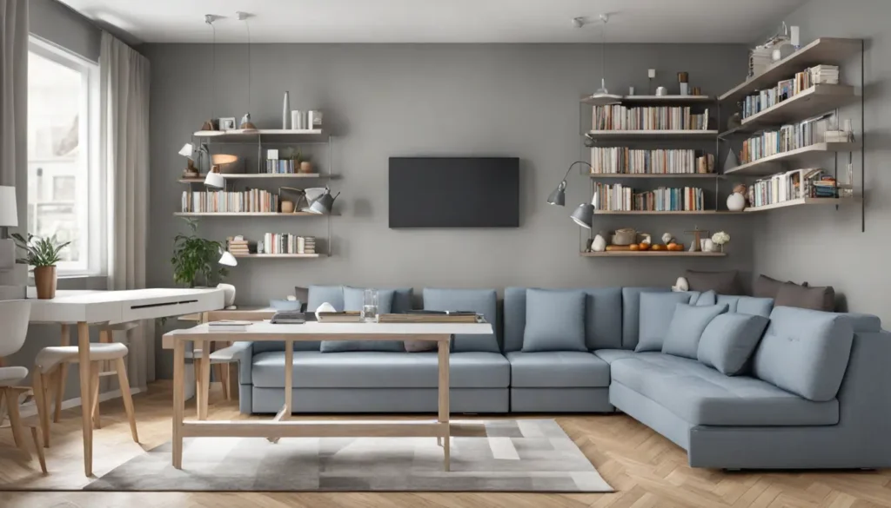
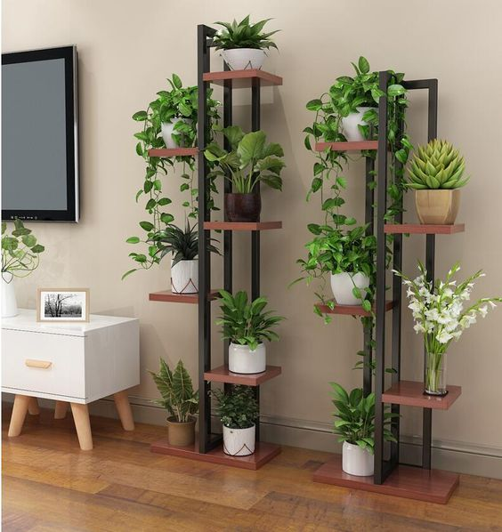

Inspirações para sua Casa
Transformar um espaço vai além de escolher móveis bonitos. A decoração certa traz personalidade e aconchego. Pensando nisso, preparamos algumas dicas simples e práticas para inspirar você:
- Use espelhos estrategicamente: Eles ampliam visualmente ambientes pequenos e refletem a luz, tornando o espaço mais claro e arejado.
- Invista em iluminação: Uma boa iluminação cria atmosferas. Combine luz geral com pontos focais (abajures, pendentes) para um ambiente mais acolhedor.
- Escolha móveis funcionais: Peças versáteis, como sofás-cama, mesas extensíveis ou pufes com armazenamento, otimizam o espaço e agregam funcionalidade.
- Adicione plantas: Elas trazem vida, cor e frescor aos ambientes, além de ajudarem a purificar o ar. Escolha espécies adequadas à luminosidade do seu espaço.
Acompanhe nossas redes sociais para mais dicas e inspirações semanais!



